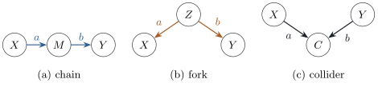

25.3 Confounding and causal graphs
The functions and disturbances of a structural causal model are usually unknown; its parent sets, saying which variables can influence which, are qualitative and best displayed as a graph. This section shows how the graph constrains the joint distribution and identifies confounding as a property of paths. For linear models the connection is exact, and the omitted-variable bias of Proposition 5.7.2 becomes a sum over paths.
25.3.1. Graphs
A directed graph on nodes
(a)
(b) a path between
(c) a path is directed (from
(d) an interior node
The graph of a structural causal
model has an arrow
Being a collider is a property of a node on a
given path: in Figure
25.3.1(c),
25.3.2. What the graph says about the distribution
Assume that for each
Under this assumption:
(a)
and
(b) under
Proof.
- (a) The variables
- (b) The modified
model is a structural causal model for the variables
other than
So an intervention deletes one factor and keeps the others, which are observational conditional densities; with every variable observed, the interventional distribution is computable from the observational one.
The linear case has an explicit form. Write a linear
model as
In a linear structural causal model:
(a)
(b) for
(c)
The number
Proof.
- (a)
- (b)
- (c) The intervened
model is linear with
This is Wright’s method of path coefficients (Wright 1921, 1934); the covariance formula in (a) gives his rule for correlations (Exercise (C1)).
25.3.3. Chains, forks and colliders
Three configurations of three variables are the building blocks of everything the graph says about conditional independence (Figure 25.3.1).

Figure
25.3.1. The three structures of Proposition 25.3.3.
In (a) and (b) the middle node transmits association
between
Consider linear models with independent disturbances,
(a) Chain
(b) Fork
(c) Collider
With normal disturbances, a zero partial covariance
means conditional independence (Proposition 3.6.1),
so in (a) and (b)
Proof. The covariances follow from
Proposition 25.3.2(a).
(a)
In the collider, independent causes become dependent
once their common effect is held fixed. In the listing,
with
import numpy as np
rng = np.random.default_rng(2503)
n = 100_000
a, b = 1.0, 1.0 # the two edge coefficients
def corr_and_partial(x, y, w):
"""Correlation of x and y, and their partial correlation given w (residuals on 1, w)."""
W = np.column_stack([np.ones(len(w)), w])
rx = x - W @ np.linalg.lstsq(W, x, rcond=None)[0]
ry = y - W @ np.linalg.lstsq(W, y, rcond=None)[0]
return np.corrcoef(x, y)[0, 1], np.corrcoef(rx, ry)[0, 1]
U = rng.normal(size=(3, n))
x = U[0]; m = a * x + U[1]; y = b * m + U[2] # chain X -> M -> Y
chain = corr_and_partial(x, y, m)
z = U[0]; x = a * z + U[1]; y = b * z + U[2] # fork X <- Z -> Y
fork = corr_and_partial(x, y, z)
x = U[0]; y = U[1]; c = a * x + b * y + U[2] # collider X -> C <- Y
collider = corr_and_partial(x, y, c)
for name, (r, rp) in [("chain", chain), ("fork", fork), ("collider", collider)]:
print(f"{name:9s} corr {r:6.3f} partial corr given middle {rp:6.3f}")25.3.4. d-separation
In a larger graph association can travel along many paths at once; d-separation combines the three structures.
Let
(i) some non-collider on the path is in
(ii) some collider on the path is not in
Otherwise the path is open given
A path is open when each non-collider is left free and each collider is conditioned on, directly or through a descendant, a noisy measurement of it (Exercise (B1)).
Let
(a) If
(b) If
Proof. Sketch; full proofs are
in the references. For (a) with densities
(Lauritzen, Dawid, Larsen and Leimer 1990): the nodes of
Part (b) says the converse of (a) fails only by accident, as in Exercise (A1), where the effect of visits and the association through illness cancel exactly. Distributions with no such cancellation are called faithful to the graph.
25.3.5. Confounding as an open path
A back-door path from
Directed paths from
In a linear structural causal model with disturbances
of positive variance, let
(a)
(b) The slope of the best linear predictor
(c) If the effect of
Proof.
(a) A directed path from
(b) The slope is
(c) Suppose
Part (a) is the potential outcome
This is the omitted-variable bias of least squares:
by Proposition 5.7.2
the short regression estimates
25.3.6. Exercises
A. Check your understanding
A DAG has arrows
Solution. There are three paths:
B. Practice
Extend the collider by
Solution.
C. Going deeper
Show from Proposition 25.3.2(a)
that in a linear model